热水温泉
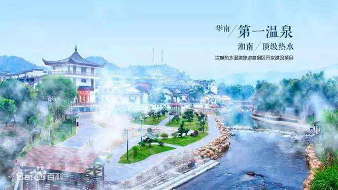
汝城温泉·福泉山庄，坐落在由住建部颁布的中国首批特色小镇--热水镇。享有华南养生第一泉的美称。是国家AAAA级旅游景区，郴州市核心景区，享称为“一山一水一泉”。
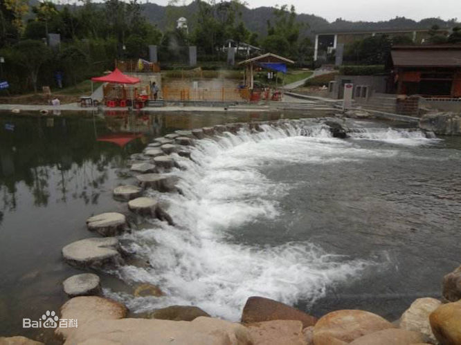
度假村位于湘粤赣三省的交界处，四周群山环抱，旁有千亩稻田，主体建筑依河而建，昼夜温差大，是华南著名的避暑胜地。
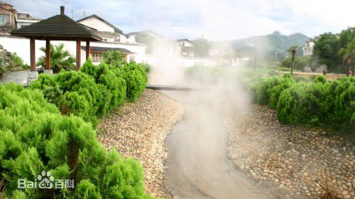
其毗临九龙江国家森林公园，负离子含量可达15万，是集五星级别墅、温泉疗养、大型生态种植基地、特色餐饮、大型会议，酒吧小镇等于一体的大型旅游度假区。
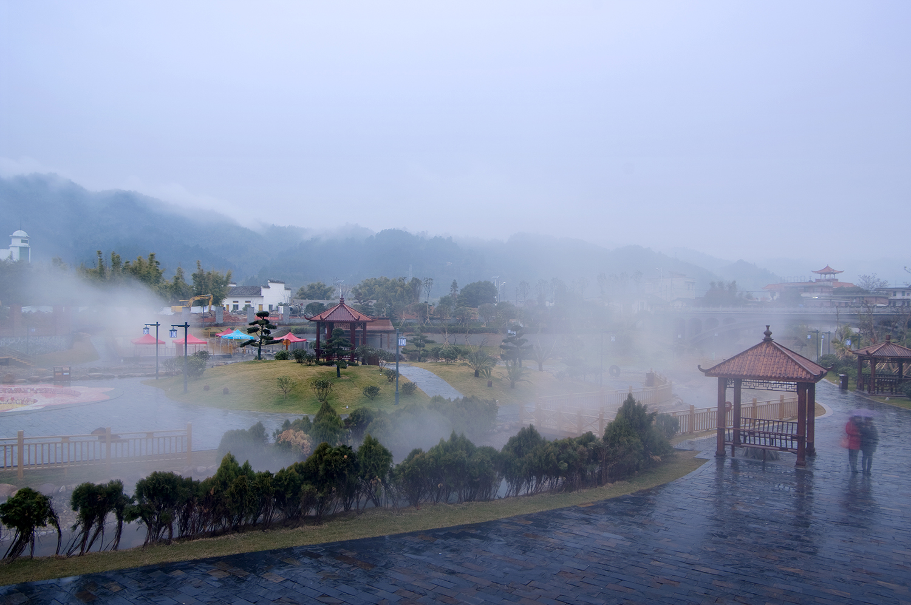
再来几张图吧
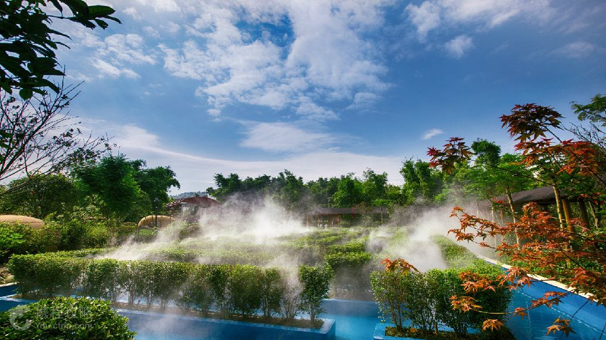

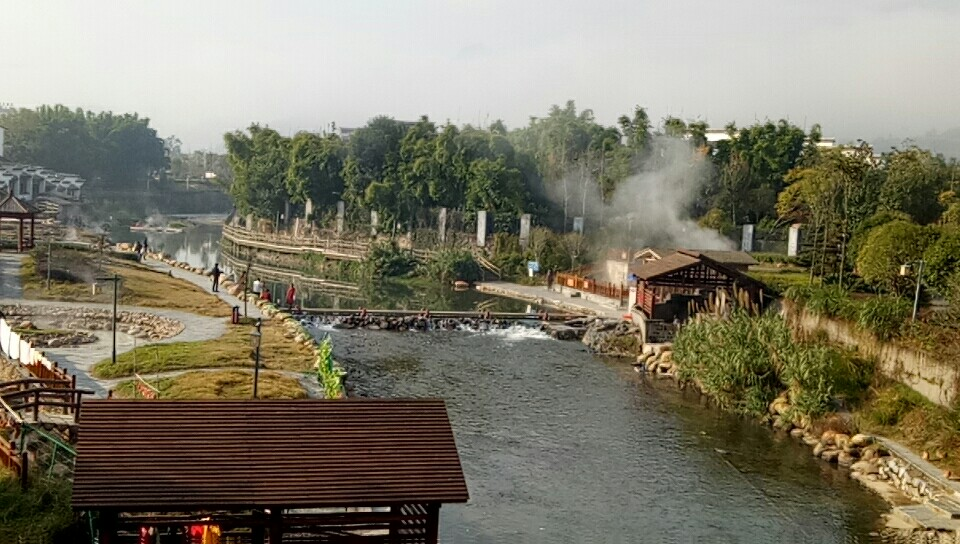

九龙江森林公园
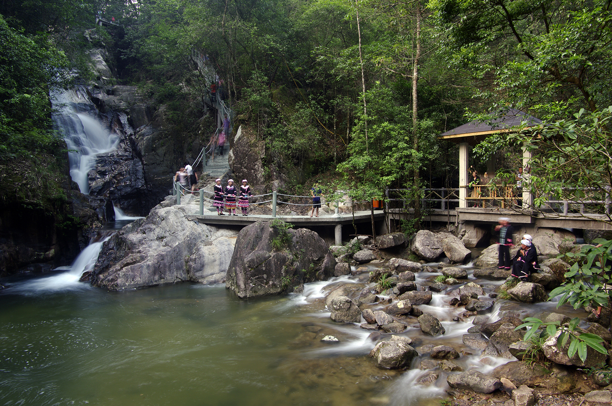
九龙江森林公园建立于2003年，2005年升为省级森林公园，2009年12月被国家林业厅正式评为国家级森林公园。
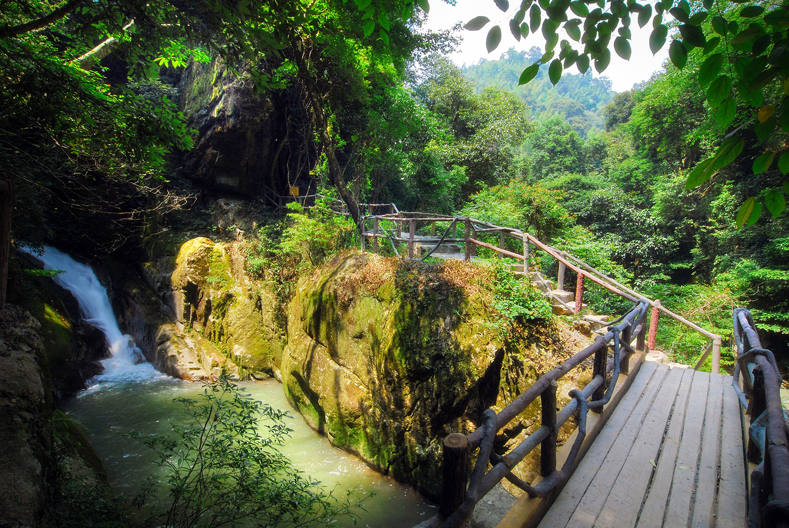
公园地处湘、粤、赣三省交界的岭北地区，与汝城大坪国有林场管辖范围一致，实行两块牌子一套人马的管理体制。
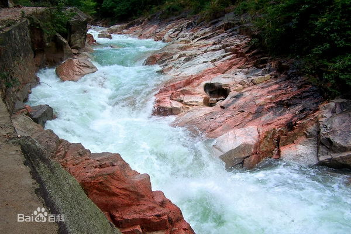
公园内地形复杂多变，具有山地地貌特征，峰峦密布，沟壑幽深，山径崎岖，大小沟谷纵横交错，以山奇、谷幽、林深、竹秀、石绝闻名遐迩，自古就有“千里烟雨”、“四面青山列翠屏，草木花香处处春”的美誉。
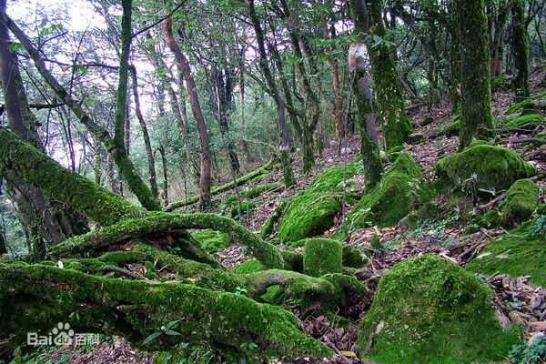
接下来是几张图片
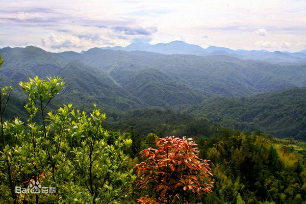
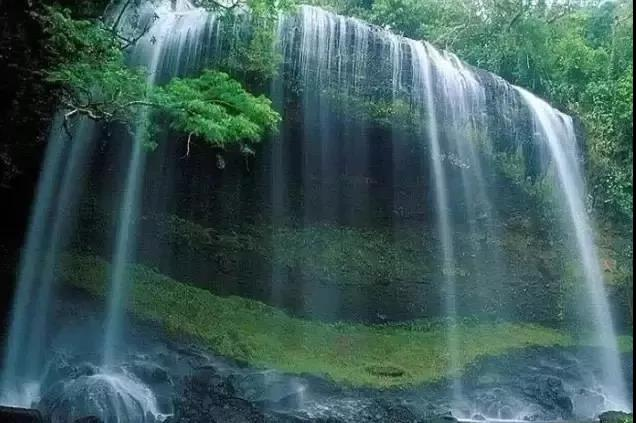
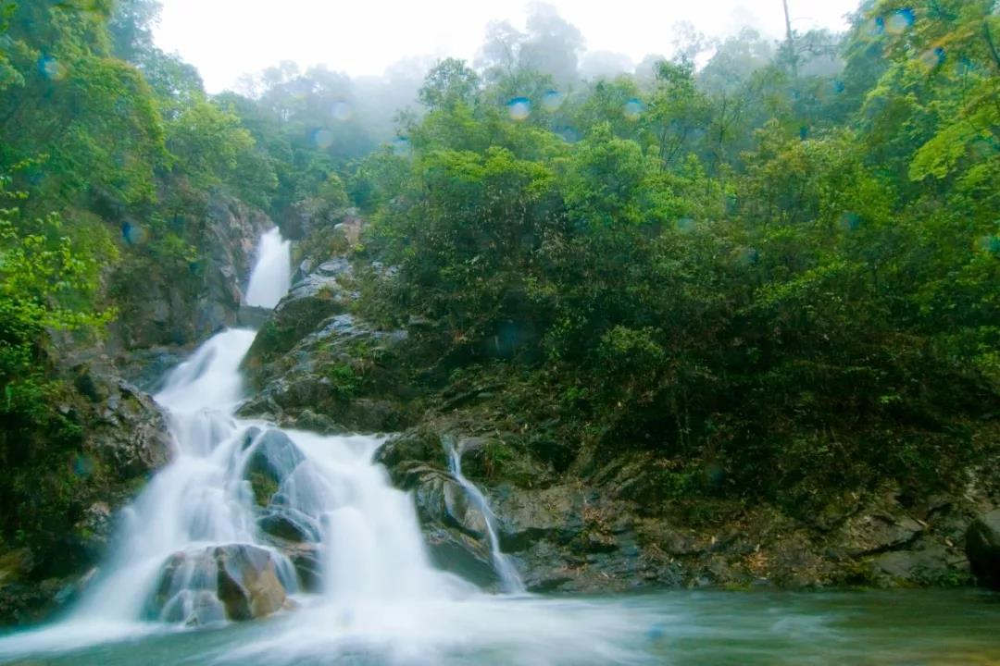
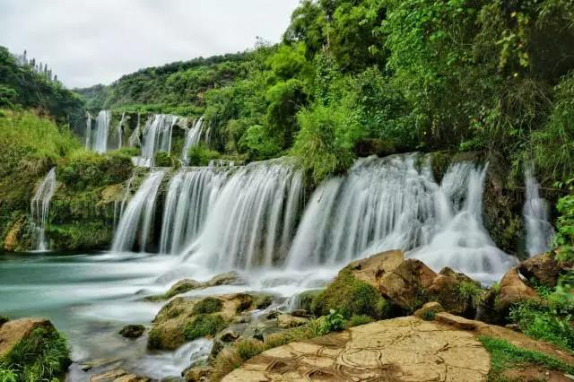